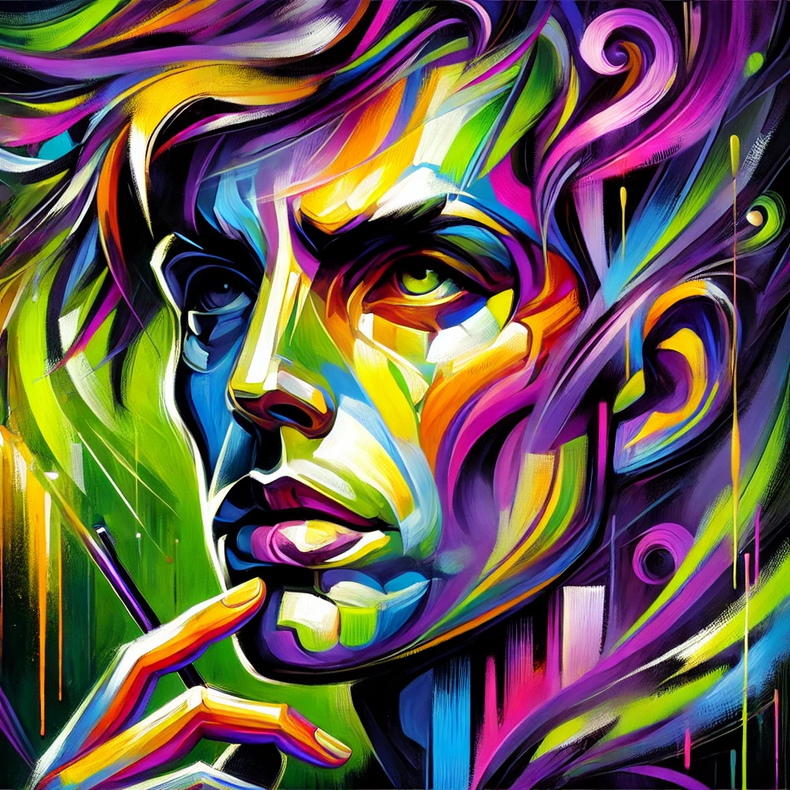
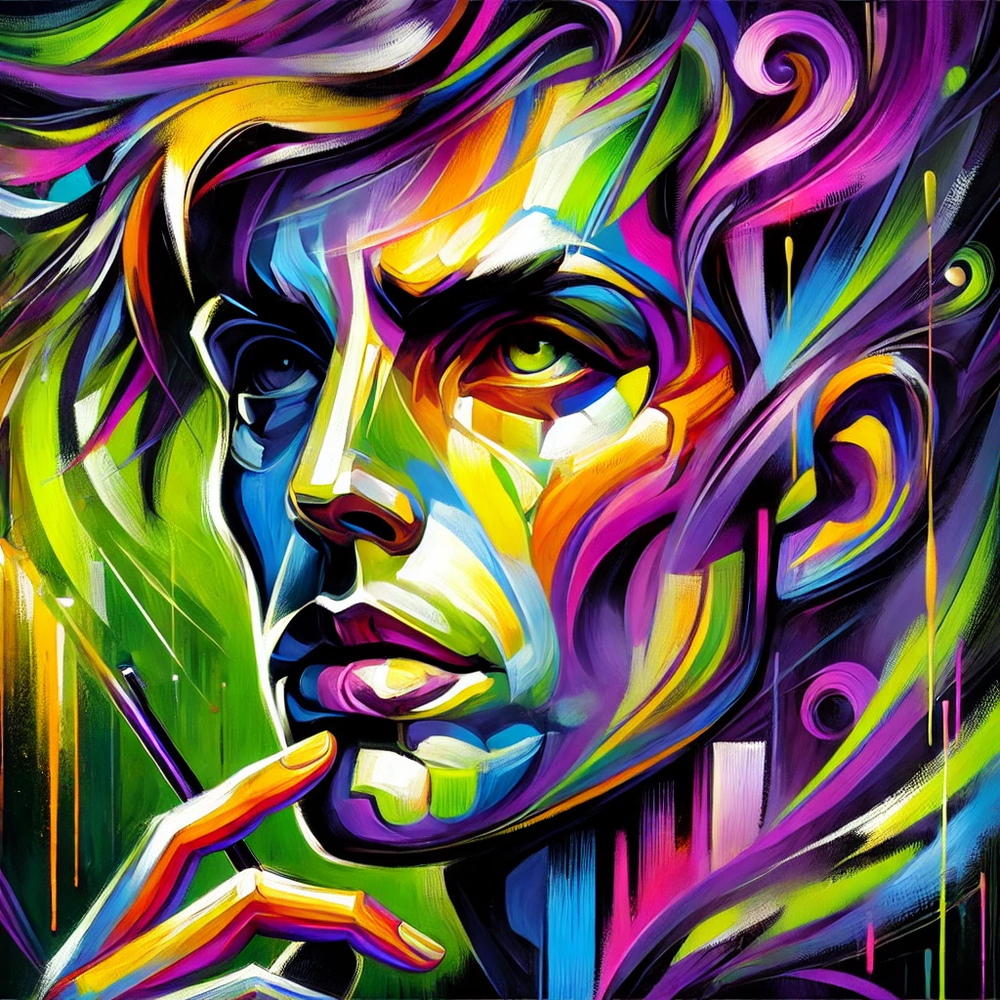

About the Artist
Sarah Chen is a San Francisco-based mixed media artist whose work explores the intersection of traditional and digital art forms. Drawing from her background in both classical painting and digital design, she creates pieces that bridge the gap between conventional artistic practices and contemporary technological innovations.
Born in Shanghai and raised in California, Chen's work is influenced by the urban landscapes of both cities, reflecting themes of cultural fusion, technological progress, and urban identity. Her recent series combines traditional oil painting techniques with digital projection and photography, creating immersive pieces that challenge the boundaries between physical and digital spaces.
A graduate of the San Francisco Art Institute, Chen has exhibited her work in galleries across the United States and Asia. Her innovative approach to mixing media has earned her recognition in both traditional art circles and digital art communities.

Selected Works
 

Recent Press
Press Archive
- "The Intersection of Traditional and Digital: A Conversation with Sarah Chen" - Modern Artist Magazine (Dec 2023)
- "Emerging Artists to Watch" - SF Chronicle (Oct 2023)
- "Digital Meets Canvas: The New Wave" - Tech & Art Today (Aug 2023)
- "Local Artist Bridges Traditional and Digital Divide" - Bay Area Arts Weekly (May 2023)